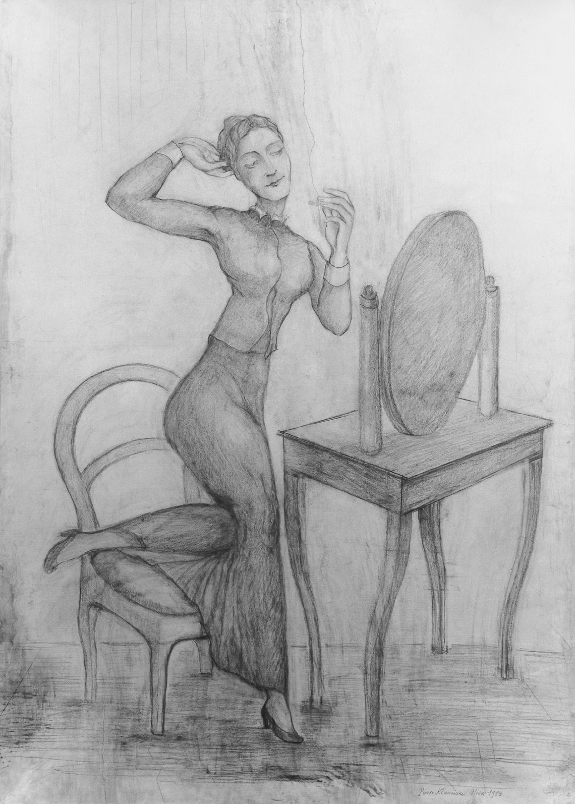

Lágrimas de Eros · Obra 113 de 121
Dibujos para «Roberte ce soir»
Pierre Klossowski (1953)

Dos de las grandes hojas a lápiz que Klossowski dibujó en 1953 para su novela «Roberte ce soir» (Minuit, 1953) y expuso en París en 1955. En la de la p. 195, el coloso con casco y el enano asaltan a Roberte: el catálogo razonado la titula «Roberte, le colosse et le nain». En la de la p. 194, Roberte, con un vestido oscuro, está enlazada a un hombre desnudo.
Lo que hace que destaque
Dos de las grandes hojas a lápiz que Klossowski dibujó en 1953 para su novela «Roberte ce soir» (Minuit, 1953) y expuso en París en 1955. En la de la p. 195, el coloso con casco y el enano asaltan a Roberte: el catálogo razonado la titula «Roberte, le colosse et le nain». En la de la p. 194, Roberte, con un vestido oscuro, está enlazada a un hombre desnudo.
Contexto histórico
La p. 195 coincide con «Roberte, le colosse et le nain». La p. 194 parece la miniatura catalogada como «Le discours de Vittorio» (1953, 100 × 72 cm), pero el título encaja mal con la escena: dudoso. Algunas fuentes dicen que Klossowski los dibujó porque Balthus no quiso ilustrar la novela; no se ha comprobado.
Autoría y procedencia
Pierre Klossowski (1905-2001), escritor, traductor y dibujante francés, hermano mayor de Balthus, autor de reflexiones decisivas sobre Sade, Nietzsche y el erotismo.
En los libros
Las lágrimas de Eros, de Georges Bataille · Lámina de la p. 194
Ficha pendiente de contrastar con fuentes académicas.